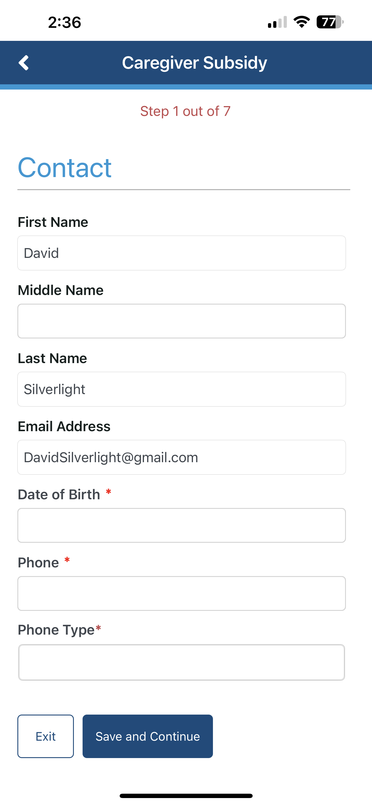
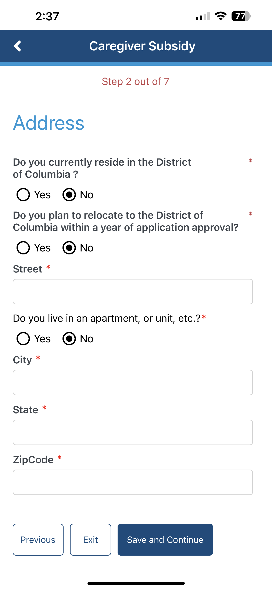
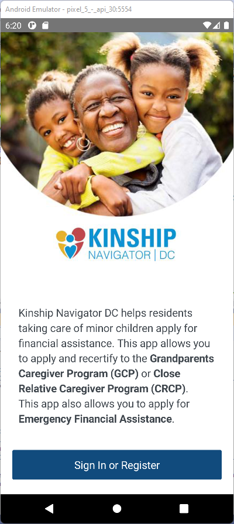
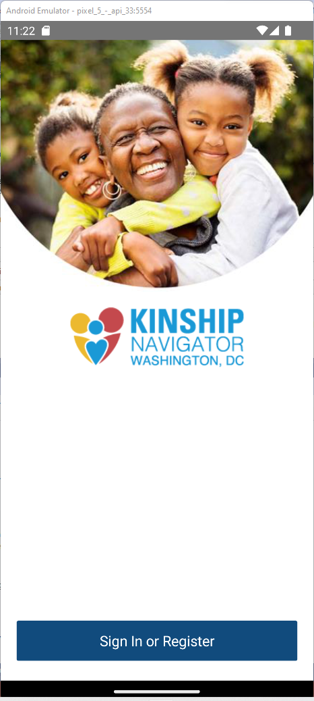

The app
A look at Kinship Navigator
A warm, accessible .NET MAUI experience across iOS and Android. Click any screen to enlarge.
Welcome
 Programs
Programs Menu
Menu
Contact
Address
Sign inA mobile companion that helps Washington, DC residents caring for minor children apply for — and recertify — the financial assistance their family qualifies for, turning detailed government programs into a clear, guided experience.

Across Washington, DC, grandparents and close relatives are raising children who can't remain with their parents. The District offers real financial support — the Grandparents Caregiver Program (GCP), the Close Relative Caregiver Program (CRCP) and Emergency Financial Assistance — but the applications are detailed and easy to stall on.
Kinship Navigator DC puts those programs in a caregiver's pocket: a calm, trustworthy app to securely sign in, choose a program, and move through the application one step at a time — then come back each year to recertify.
I set the technical direction for Kinship Navigator and built out its core feature set on .NET MAUI — architecting for a clean, extensible foundation while keeping the experience gentle and dependable for people under real stress.
Kinship Navigator breaks an overwhelming process into a journey anyone can follow.
Start a caregiver subsidy or emergency financial assistance request.
Register or sign in to protect personal and family information.
Move through the application one clear step at a time, saving as you go.
Submit the application and return each year to recertify with ease.
Apply for the Grandparents Caregiver Program (GCP) and Close Relative Caregiver Program (CRCP) — subsidies for relatives raising children.
Request support for food, clothing, housing, utilities, furniture, pest control, household items or transportation.
Long forms broken into clear steps — Contact, Address and more — with Save & Continue, so nothing is lost along the way.
Submit new applications and recertify existing benefits each year, all from one secure account.
Every screen is built for low stress and high clarity — generous type, calm color, plain language and accessible touch targets — so the app feels like a steady hand, not another hurdle.
A warm, accessible .NET MAUI experience across iOS and Android. Click any screen to enlarge.
ProgramsMenu
Contact
Address
Sign inOne .NET MAUI codebase across iOS and Android, with secure Azure AD B2C sign-in and REST services — a clean architecture that keeps the app dependable today and ready for the programs and features to come.